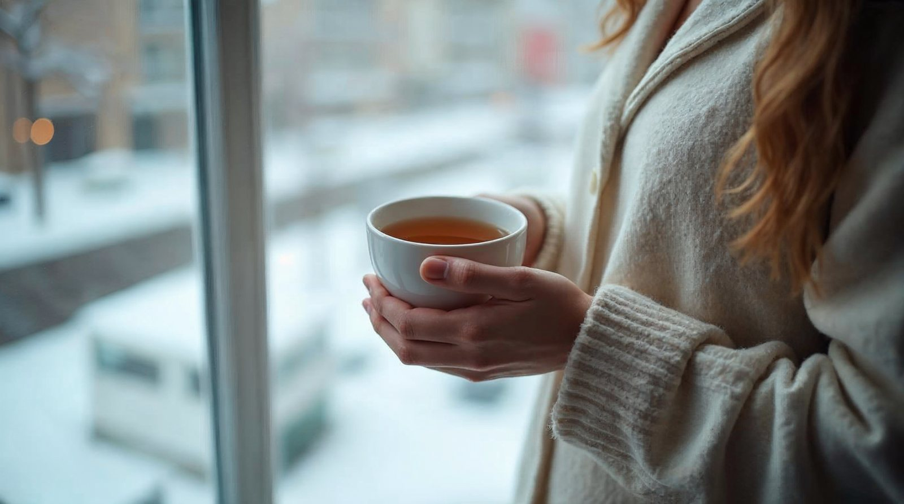
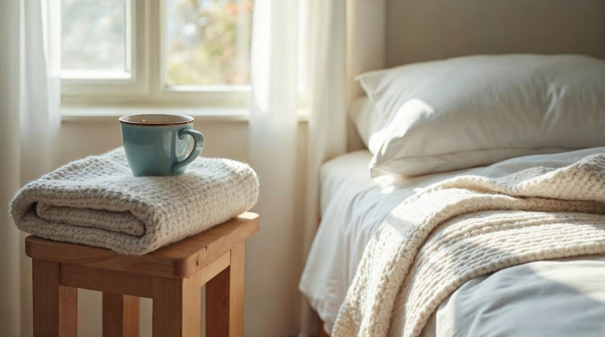
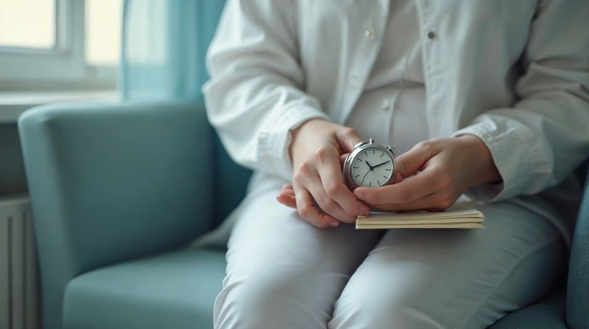
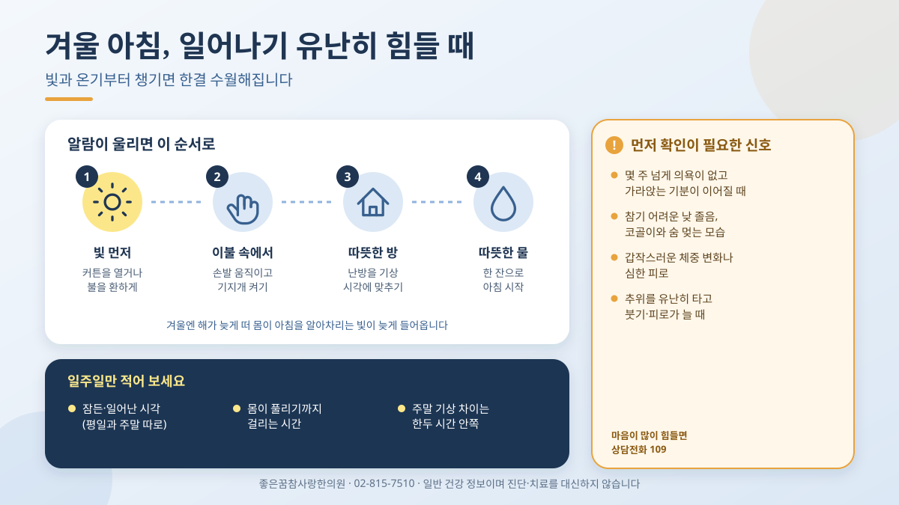

이종호 한의사 감수좋은꿈참사랑한의원 대표원장 (한의사 면허번호 19769)발행 2026-11-22 · 수정 2026-11-26
이 글의 차례
캄캄한 아침, 알람을 끄고 다시 이불을 끌어당기고 계신가요? 겨울 아침이 유난히 힘들 때 저는 잠든 시각, 아침에 빛을 보는 시간, 방의 온도 이 세 가지를 먼저 살펴보자고 말씀드립니다. 대개는 계절과 생활이 겹쳐 생기는 일이라, 아침과 저녁의 순서를 조금 바꾸는 것만으로도 한결 수월해질 수 있습니다.
다만 몇 주째 기분이 가라앉고 의욕이 없거나, 충분히 자도 낮에 참기 어려운 졸음이 이어진다면 계절 탓으로 넘기기 전에 확인이 필요합니다.
6시 30분, 알람이 울립니다. 창밖은 아직 캄캄하고 이불 밖으로 내민 코끝이 시립니다. 5분만, 하고 눈을 감았는데 5분이 10분이 되고, 두 번째 알람이 울릴 때쯤에는 마음이 급해집니다. 겨우 몸을 일으켜 세수를 해도 머리는 멍하고 몸은 물먹은 솜 같습니다. 출근길 버스 창밖으로 해가 떠오르는 것을 보고 나서야 조금씩 정신이 듭니다.
진료실에서 이런 말씀을 자주 듣습니다. "겨울만 되면 아침에 일어나는 게 전쟁이에요." "여름에는 알람 없이도 눈이 떠졌는데, 요즘은 알람을 세 번은 꺼야 일어나요." 그러면서 요즘 게을러진 것 같다고 스스로를 탓하시곤 합니다.
저는 그렇게 생각하지 않습니다. 어둡고 추운 아침을 몇 달째 견디며 출근하고, 아이를 깨우고, 하루를 시작해 오셨다는 것만으로도 충분히 애쓰고 계신 겁니다. 겨울 아침이 무거운 데에는 몸 나름의 이유가 있습니다.
왜 겨울 아침은 유난히 무거울까요
몸에는 하루를 재는 시계가 있고, 이 시계를 아침마다 맞춰 주는 것이 빛입니다. 아침에 밝은 빛을 보면 몸은 낮이 시작됐다고 알아차리고, 밤에 잠을 부르던 신호도 서서히 잦아듭니다.
그런데 한겨울에는 해가 7시 반이 넘어서야 뜨는 날이 많아, 6시대에 일어나는 분은 출근 준비를 다 마칠 때까지 창밖이 깜깜합니다. 몸은 아직 밤이라고 느끼는데 알람만 아침이라고 외치는 셈입니다.
저녁이 길어지는 것도 한몫합니다. 해가 일찍 지니 집 안 조명 아래에서 보내는 시간이 길어지고, 그 시간에 휴대폰과 텔레비전 화면을 오래 보면 잠드는 시각이 슬금슬금 뒤로 밀립니다. 연말 모임과 야근까지 겹치면 밤은 더 늦어지는데 아침은 그대로이니 잠이 모자랄 수밖에 없습니다.
추위는 말할 것도 없습니다. 따뜻한 이불 속과 차가운 방 공기의 차이가 클수록 이불 밖으로 나가는 일 자체가 큰 결심이 됩니다. 밤사이 보일러가 꺼져 방이 식으면 새벽에 추워서 깨고, 그렇게 쪼개진 잠은 아침을 더 무겁게 만듭니다.
잠은 시간만큼 깊이와 이어짐도 중요합니다. 자주 깨거나 얕은 잠이 이어지면 오래 누워 있어도 피로가 남을 수 있습니다. 겨울에는 바깥 활동이 줄어 밤잠이 얕아지기 쉽고, 난방으로 방이 건조해지면 입을 벌리고 자거나 코가 막혀 잠이 덜 깊어지기도 합니다. 여덟 시간을 자도 아침이 피곤하다면 시간보다 잠의 깊이와 이어짐을 먼저 살펴봅니다.
주말 늦잠도 월요일 아침을 힘들게 합니다. 평일보다 두세 시간 늦게 일어나면 몸은 주말마다 짧은 시차 여행을 다녀오는 셈입니다. 일요일 밤에는 잠이 안 오고, 월요일 아침에는 몸이 아직 다른 시간대에 머물러 있지요.
맥도 겨울에는 조금 가라앉습니다
한의학에서는 맥도 계절을 탄다고 봅니다. 전통적으로 봄에는 조금 팽팽하고, 여름에는 넘실거리고, 가을에는 가볍게 뜨고, 겨울에는 가라앉는 맥을 자연스럽게 봅니다. 나이와 체격, 하는 일에 따라서도 정상의 폭이 다릅니다. 겨울에 몸이 조금 느려지고 아침에 머뭇거리는 것을 너무 이상하게 여기지 않으셔도 되는 이유입니다.
옛 책은 하루 가운데 몸이 가장 고요한 때를 이른 아침으로 보았고, 그래서 진맥하기에도 가장 좋은 때로 꼽았습니다. 그 고요한 몸을 알람 소리 하나로 단번에 일으켜 세우려니 아침이 버거울 수밖에 없습니다. 몸에도 잠에서 낮으로 건너오는 시간이 조금 필요합니다.
다만 아침에 몸이 무겁다는 말씀을 들으면 저는 한 가지를 더 나눠 봅니다. 힘이 없어서 몸이 무거운 것과 살이 쪄서 몸이 무거운 것은 다릅니다. 차로 치면 연료가 부족한 상태인지부터 봅니다. 같은 무거움이라도 기운을 아껴야 하는 분이 있고 쌓인 열을 풀어야 하는 분이 있어서, 생활에서 권해 드리는 것도 달라집니다.
계절 탓만으로 보기 어려운 경우도 있습니다. 겨울마다 몇 주씩 기분이 가라앉고 잠이 늘고 단것이 당기는 분, 추위를 유난히 타면서 붓고 피로한 분, 코골이가 심해 자도 개운하지 않은 분은 다른 원인을 먼저 확인해 보아야 합니다. 감기약처럼 졸음이 오는 약을 드시는 동안 아침이 더 무거워지기도 합니다.
이런 분들을 자주 뵙습니다
해 뜨기 전에 집을 나서는 직장인이 많습니다. 일어나서 나갈 때까지 빛을 볼 틈이 없으니, 몸은 출근길 지하철 안에서도 반쯤 밤에 머물러 있습니다. 이런 분께는 일어나자마자 집 안 불을 환하게 켜고, 출근길에는 한 정거장쯤 바깥을 걸어 보시라고 말씀드립니다. 점심시간에 10~15분이라도 밖에서 햇빛을 보는 것도 함께 권합니다.
아이 등원 준비를 하는 부모님들도 자주 뵙습니다. 아이도 안 일어나고 나도 안 일어나는 아침, 서로 재촉하다 보면 하루가 시작부터 지칩니다.
이런 분께는 알람이 울리면 아이 방보다 거실 커튼과 불을 먼저 켜고, 식탁에 따뜻한 국이나 물을 올려 두는 것으로 아침의 신호를 함께 만들어 보시라고 합니다. 온 가족이 같은 시각에 빛을 보면 저녁에 잠드는 시각도 조금씩 맞춰지기 쉽습니다.
재택근무를 하거나 방학 중인 분들은 일어나는 시각이 날마다 달라지기 쉽습니다. 오늘은 7시, 내일은 9시, 주말에는 11시가 되면 몸이 아침을 언제로 알아야 할지 헷갈립니다. 출근할 곳이 없더라도 일어나는 시각만큼은 정해 두고, 일어나면 바로 바깥 공기를 한번 쐬는 습관을 권합니다.
어르신들께서는 겨울에 새벽 일찍 깨는데 정작 아침에는 몸이 굳어 일어나기 힘들다고 하십니다. 관절이 뻣뻣하고, 일어서다 어지럽기도 합니다. 이런 분께는 이불 속에서 손발을 천천히 움직인 뒤 옆으로 돌아누워 팔로 짚고 일어나 앉고, 침대 가장자리에 잠시 앉아 숨을 고른 다음 일어서시라고 말씀드립니다.

겨울 아침, 일어나기 전후 30분 순서
6시 30분에 일어나야 하는 분을 예로 들어 보겠습니다. 전날 밤, 보일러는 일어나기 30분~1시간 전에 돌아가도록 예약해 둡니다. 침대 옆에는 카디건이나 조끼, 실내화를 놓아두고, 보온병에 따뜻한 물을 담아 머리맡에 둡니다. 알람은 하나만 맞추고, 휴대폰은 침대에서 손이 닿지 않는 곳에 두어 끄려면 일어나야 하게 만듭니다.
6시 30분 알람이 울리면 일어나서 알람을 끄고, 그 자리에서 방 불을 켭니다. 다시 이불 속으로 들어가지 않는 것이 핵심입니다. 몸이 너무 무겁다면 일단 침대 가장자리에 앉아 카디건을 걸치고 따뜻한 물을 몇 모금 마십니다.
6시 35분쯤에는 침대에 앉은 채로 기지개를 켜고 목과 어깨를 천천히 돌리고 발목을 몇 번 움직입니다. 1~2분이면 충분합니다. 그다음 거실로 나가 커튼을 엽니다. 아직 어둡더라도 창가에 서서 바깥을 한번 보시고, 집 안 조명은 밝게 켭니다.
아침 식사는 간단해도 따뜻한 것으로 드시는 편이 좋습니다. 데운 우유, 따뜻한 국 한 그릇, 누룽지처럼 속에 부담이 적은 것이면 됩니다. 몸을 안에서부터 데우고 하루의 시계를 맞추는 데에도 보탬이 될 수 있습니다.
해가 뜬 뒤에는 바깥에서 빛을 보는 시간을 만듭니다. 출근길에 조금 걷거나 오전 쉬는 시간에 잠깐 밖에 나가는 것으로 충분합니다. 흐린 날이라도 바깥은 실내보다 훨씬 밝습니다.
저녁에는 이 순서를 거꾸로 생각합니다. 잠들기 1시간 전부터 조명을 낮추고 화면을 줄입니다. 침실은 너무 덥지 않게 맞추는데, 흔히 권하는 겨울 실내 온도는 18~20도, 습도는 40~60% 정도입니다. 너무 덥게 자면 새벽에 땀이 나서 깨고, 아침에는 오히려 몸이 더 무겁습니다.
몇 가지 여쭤보겠습니다. 평일과 주말에 일어나는 시각이 두 시간 넘게 차이가 나나요? 알람을 몇 번이나 미루시나요? 일어나서 몸이 풀리기까지 30분이 넘게 걸리나요?
아침에 해를 보는 시간이 하루 중 거의 없지는 않나요? 밤에 두 번 넘게 깨거나 코를 곤다는 말을 들으신다면 그것도 함께 적어 두세요. 이 답들이 어디서부터 손을 대야 할지 알려 줍니다.

낮추어 정하고, 꾸준하게
저는 큰 목표를 잘 드리지 않습니다. 해낼 수 있는 만큼을 함께 정합니다. 위의 순서를 다 하실 필요는 없습니다. 알람 하나로 줄이기, 일어나자마자 불 켜기, 이 두 가지만 먼저 일주일 해 보셔도 충분히 좋은 시작입니다.
주중에 쌓인 피로를 주말에 몰아서 풀고 싶은 마음은 충분히 이해합니다. 그래도 토요일과 일요일에 두세 시간씩 늦게 일어나면 월요일 아침이 더 힘들어집니다. 피곤한 주말에는 평소보다 한 시간 안쪽으로만 늦게 일어나 아침 빛을 먼저 보고, 모자란 잠은 이른 오후에 20분 안쪽의 짧은 낮잠으로 채워 보세요.
알람을 미루는 5분도 비슷합니다. 다시 잠들었다 깨기를 몇 번 되풀이하면 그 시간은 쉼이라기보다 쪼개진 잠에 가깝습니다. 알람을 세 번 미루고 일어난 날 오히려 더 멍하다고 말씀하시는 분이 많습니다.
사람은 생각보다 쉽게 낙담합니다. 늦잠을 잔 날, 알람을 또 미룬 날이 생겨도 스스로를 탓하지 마시고 다음 날 다시 하면 됩니다. 매일 밥을 먹고, 매일 조금 움직이고, 필요한 치료를 받고, 매일 웃는 하루가 쌓이는 것. 제가 아는 오래 건강하게 사는 길은 그렇게 소박합니다.

얼마나 지켜보고, 언제 진료를 받을까요
일어나는 순서를 바꿔 보셨다면 2주 정도는 잠든 시각과 일어난 시각, 알람을 미룬 횟수, 몸이 풀리기까지 걸린 시간을 적어 보세요. 그래도 한 달 넘게 아침마다 몸이 무겁고 오전 내내 머리가 맑지 않다면 상담을 받아 보시길 권합니다.
이런 증상은 먼저 확인이 필요합니다
- 2주 넘게 거의 매일 기분이 가라앉고 좋아하던 일에도 흥미가 생기지 않거나, 스스로를 해칠 생각이 드는 경우
- 충분히 자도 낮에 참기 어려운 졸음이 이어지거나, 운전 중에 졸음이 쏟아지는 경우
- 스스로를 해칠 생각이 들면 ☎ 109로 바로 연락하세요.
이런 신호가 있으면 한의원보다 가까운 병원이나 응급실을 먼저 찾으세요.
좋은꿈참사랑한의원에 처음 오시면
처음 오시면 저는 평일과 주말에 몇 시에 잠들고 몇 시에 일어나시는지부터 여쭙니다. 알람은 몇 번 미루시는지, 일어나서 몸이 풀리기까지 얼마나 걸리는지, 아침에 빛을 보는 시간은 언제인지, 침실은 춥거나 덥지 않은지도 듣습니다. 밤에 깨는 횟수와 코골이, 아침 식사와 화장실, 요즘 기분과 의욕도 차례로 여쭙습니다.
그다음 손목을 짚어 맥을 봅니다. 맥을 보는 동안 손발과 아랫배가 찬지, 추위를 얼마나 타시는지, 소화는 편한지 여쭙고, 필요하다고 판단되면 혀를 보거나 배를 살핍니다. 맥을 읽어 드리고, 지금 치료가 필요한지 생활을 바꾸며 지켜봐도 되는지를 구분해 말씀드립니다.
필요하다면 침이나 한약 상담 등 지금 상태에 맞는 방법을 정하고, 진료실을 나서기 전에는 내일 아침부터 해 볼 순서 한 가지를 함께 정합니다. 다시 오시면 그사이 일어나는 시각이 얼마나 지켜졌는지부터 이어서 여쭙습니다.
처음에는 그저 아침이 힘들다고만 하셨던 분께도 두 번째 만남에서는 더 자세히 여쭤볼 수 있습니다. 잠이 늦게 들어서 힘드셨던 건지, 자다가 자주 깨서 힘드셨던 건지, 돌아보니 어느 쪽이 더 힘드셨는지. 지키기 어려웠던 순서가 있었다면 그 사정부터 듣겠습니다. 그 대답은 다음에 만나야 들을 수 있습니다.
오실 때 일주일 동안 잠든 시각과 일어난 시각을 평일과 주말로 나눠 적고, 아침에 몸이 풀리기까지 걸린 시간, 침실 온도, 기분이나 의욕의 변화를 메모해 오시면 이야기가 훨씬 빨라집니다.
마치며
좋은꿈참사랑한의원이 소중하게 여기는 말은 '건강한 리듬, 행복한 기억'입니다. 제게 건강한 리듬은 퍽 구체적입니다. 밥때가 되면 편하게 먹고, 밤에는 쉬고, 아침에는 오늘 할 일을 시작할 힘이 있는 것. 겨울 아침의 무거움을 게으름이라고 부르지 않으셨으면 하는 것도 그래서입니다.
어두운 방에서 알람을 끄고 몸을 일으키는 매일 아침이 사실은 작은 용기를 내는 일입니다. 그 용기가 조금 덜 들도록 빛과 온기와 순서를 함께 챙겨 보겠습니다. 내일 아침에는 알람이 울리면 일어나서 끄고, 불부터 켜 보세요. 다음에 오시면 알람이 울리고 몇 분 만에 이불 밖으로 나오셨는지부터 여쭙겠습니다.
함께 읽으면 좋은 글
- 겨울 아침 알람을 여러 번 미루며 다시 잠들다 보면 오히려 더 멍하고 밤잠까지 늦어질 때는 어떻게 살피나요?
- 12월 해 뜨기 전 깜깜한 방에서 일어나야 하는 직장인, 기상 전후 집 안 조명과 커튼은 어떻게 쓰면 아침이 덜 힘들까요?
- 일어나는 시각을 일정하게 하면 잠이 달라질까요?

먼저 확인이 필요한 신호
- 2주 넘게 거의 매일 기분이 가라앉고 좋아하던 일에도 흥미가 생기지 않거나, 스스로…
- 충분히 자도 낮에 참기 어려운 졸음이 이어지거나, 운전 중에 졸음이 쏟아지는 경우
- 스스로를 해칠 생각이 들면 109로 바로 연락하세요.
왜 겨울 아침은 유난히 무거울까요
- 몸에는 하루를 재는 시계가 있고, 이 시계를 아침마다 맞춰 주는 것이 빛입니다.
- 아침에 밝은 빛을 보면 몸은 낮이 시작됐다고 알아차리고, 밤에 잠을 부르던 신호도…
맥도 겨울에는 조금 가라앉습니다
- 한의학에서는 맥도 계절을 탄다고 봅니다.
- 전통적으로 봄에는 조금 팽팽하고, 여름에는 넘실거리고, 가을에는 가볍게 뜨고, 겨울…
이런 분들을 자주 뵙습니다
- 해 뜨기 전에 집을 나서는 직장인이 많습니다.
- 일어나서 나갈 때까지 빛을 볼 틈이 없으니, 몸은 출근길 지하철 안에서도 반쯤 밤에…
자주 묻는 질문
아침에 일어나기 힘든 것도 불면인가요?
일어나기 힘든 것만으로 불면이라고 하지는 않습니다. 밤잠의 모습과 낮의 상태를 함께 보고 판단합니다.
겨울에만 그러면 그냥 두어도 되나요?
계절 영향인 경우가 많지만 일상이 힘들 정도이거나 오래 이어지면 상담을 권합니다.
한의원에서는 무엇을 보나요?
잠든 시각과 깊이, 몸의 온기와 소화, 평소 생활을 함께 묻고 아침 컨디션이 어떤 흐름에서 나타나는지 살핍니다.
주말에 몰아서 자면 피로가 풀리지 않나요?
조금 더 자는 것은 괜찮지만 평일보다 한두 시간 넘게 늦게 일어나면 월요일 아침이 더 힘들어지기 쉽습니다. 평소 시각 가까이 일어나 아침 빛을 본 뒤, 이른 오후에 20분 안쪽으로 짧게 쉬어 보세요.
알람을 여러 개 맞춰 두는 게 나을까요?
알람을 여러 번 미루며 짧게 다시 잠들면 오히려 더 멍해진다는 분이 많습니다. 알람은 하나로 줄이고 침대에서 손이 닿지 않는 곳에 두어, 일어나서 끄는 방법을 권합니다.
좋은꿈참사랑한의원은 재진 때 지난번 이야기부터 이어서 여쭙니다. 진료시간과 예약은 오시는 길에서 확인하세요.
어디서 상담받을 수 있나요?
좋은꿈참사랑한의원은 서울 동작구 만양로2길 2 신성빌딩 3층·5층(서울 동작구 상도동, 7호선 상도역 3번 출구 근처)에 있습니다. 한의사 3명(이종호 대표원장, 조영기 수석진료원장, 정원영 진료원장)이 진료합니다. 진료시간은 평일 09:30~20:00(점심 13:00~14:00), 토·일·공휴일 09:30~15:00이며, 방문 전 전화로 확인을 권합니다. 예약은 네이버 예약, 카카오톡 상담, 전화 02-815-7510로 받습니다.
이 글은 일반적인 건강 정보이며 개인의 진단이나 치료를 대신하지 않습니다. 증상이 있거나 복용 중인 약이 있다면 진료를 통해 확인하세요. 치료 효과는 개인마다 다를 수 있습니다.
작성 기준: 일반적으로 알려져 있는 건강 정보를 참고해 정리했습니다(대표원장 감수). 증상 기록은 1~2주 동안 하루 1회, 비슷한 시간에 적어 오시면 지난 상태와 비교하기 쉽습니다.